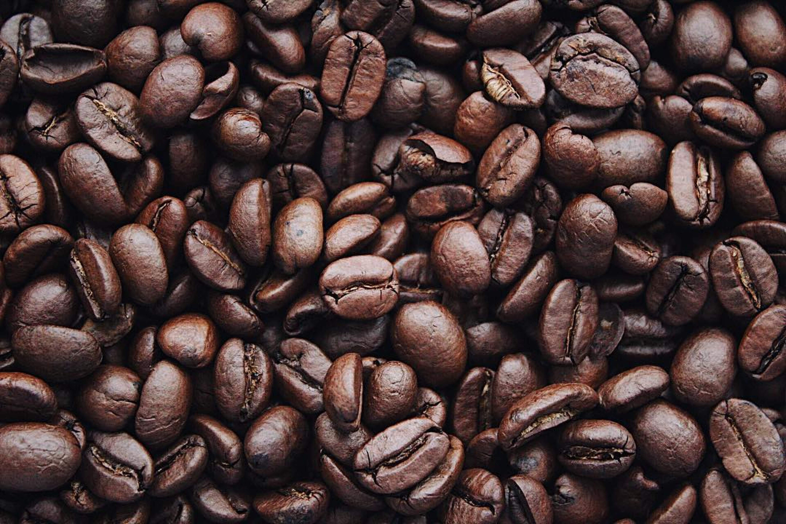

<ion-card class="long-card">
  <ion-grid class="ion-no-padding">
    <ion-row>
      <ion-col size="3">
        <div *ngIf="bean?.attachments?.length === 0" style="margin:0 auto;">
          
        </div>
        <div (click)="viewPhotos()" *ngIf="bean?.attachments && bean?.attachments?.length > 0"
             style="margin:0 auto;" tappable>
          <async-image [filePath]="bean.attachments[0]" class="bean-slider"></async-image>
        </div>
      </ion-col>
      <ion-col size="9" style="padding-left:16px;">
        <ion-card class="ion-no-padding ion-no-margin long-card" style="padding-top:8px;padding-right:8px;">
          <ion-card-content>
            <ion-grid class="ion-no-padding">
              <ion-row>

                <ion-col class="ion-no-padding" size="11">
                  <ion-list lines="none" style="width:100%;">
                    <ion-item>
                      <ion-col class="ion-text-bold" size="12">{{bean?.name}}</ion-col>
                    </ion-item>
                    <ion-item>
                      <ion-col *ngIf="bean?.weight && settings.grind_weight"
                               [innerHTML]="'BEAN_WEIGHT_ALREADY_USED' | translate: {gramUsed: getUsedWeightCount() | number : '.0-2', gramTotal: bean?.weight}"
                               size="12">
                      </ion-col>
                      <ion-col *ngIf="!(bean?.weight && settings.grind_weight)"
                               [innerHTML]="'BEAN_WEIGHT_ALREADY_USED' | translate: {gramUsed: '0', gramTotal: '0'}"
                               size="12">
                      </ion-col>
                    </ion-item>
                    <ion-item>
                      <ion-col class="ion-text-bold" size="6">{{"BEAN_DATA_ROASTER" | translate}}:
                      </ion-col>
                      <ion-col *ngIf="bean.roaster" size="6">
                        {{bean.roaster}}
                      </ion-col>
                      <ion-col *ngIf="!bean.roaster">-</ion-col>
                    </ion-item>
                    <ion-item *ngIf="bean?.roastingDate">
                      <ion-col class="ion-text-bold" size="6">{{"BEAN_DATA_ROASTING_DATE" | translate}}:
                      </ion-col>
                      <ion-col size="6">
                        {{bean.roastingDate | formatDate:["DD.MM.YYYY"]}}
                      </ion-col>
                    </ion-item>
                    <ion-item>
                      <ion-col class="ion-text-bold" size="6">{{"BEAN_DATA_ROAST_NAME" | translate}}:
                      </ion-col>

                      <ion-col
                        *ngIf="bean.roast === getRoastEnum(roast_enum.CUSTOM_ROAST) && bean.roast !== getRoastEnum(roast_enum.UNKNOWN)"
                        size="6">
                        {{bean.roast_custom}}
                      </ion-col>
                      <ion-col
                        *ngIf="bean.roast !== getRoastEnum(roast_enum.CUSTOM_ROAST) && bean.roast !== getRoastEnum(roast_enum.UNKNOWN)"
                        size="6">
                        {{roast_enum[bean.roast]}}
                      </ion-col>
                      <ion-col>-</ion-col>
                    </ion-item>
                    <ion-item *ngIf="bean?.roast_range !== 0">
                      <ngx-stars #beanStars [initialStars]="bean.roast_range" [readonly]="true" [size]="1"
                                 style="margin-top:8px;"></ngx-stars>
                    </ion-item>
                    <ion-item>
                      <div style="margin-top:8px;margin-bottom:8px;border-top:1px solid #CEC2AC;width:100%;"></div>
                    </ion-item>
                    <ion-item class="ion-margin-bottom">
                      <ion-col size="6">
                  <span *ngIf="brewCounts() <1 " class="ion-text-bold">
                    {{"NO_BREW" | translate}}
                  </span>
                        <span *ngIf="brewCounts() === 1" class="ion-text-bold">
                    {{"ONE_BREW"| translate}}
                  </span>
                        <span *ngIf="brewCounts() > 1" class="ion-text-bold">
                     {{"MULTIPLE_BREWS"| translate: {count: brewCounts()} }}
                  </span>
                      </ion-col>
                      <ion-col size="6">
                  <span *ngIf="daysOld() === 0 || daysOld() > 1" class="ion-text-bold">
                     {{"ROAST_DAYS_OLD"| translate: {days: daysOld()} }}
                  </span>
                        <span *ngIf="daysOld() === 1" class="ion-text-bold">
                     {{"ROAST_DAY_OLD"| translate}}
                  </span>

                      </ion-col>
                    </ion-item>
                  </ion-list>
                </ion-col>
                <ion-col size="1">
                  <ion-button (click)="showBeanActions($event)" class="button-top-absolute" color="accent"
                              fill="clear" tappable>
                    <ion-icon name="beanconqueror-dots" slot="icon-only"></ion-icon>
                  </ion-button>
                </ion-col>
              </ion-row>
            </ion-grid>
          </ion-card-content>
        </ion-card>
      </ion-col>
    </ion-row>
  </ion-grid>
</ion-card>
